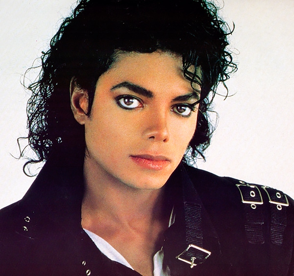

Здесь я буду рассказывать о любимых мною исполнителях - Мадонне и Майкле Джексоне.
Описать все достижения Мадонны и Майкла Джексона на одной странице? Невозможно.
Но если хотите узнать немного больше, то воспользуйтесь моим предложением ниже.

Во всём мире продано более 10-ти миллионов копий дебютного альбома Мадонны
Майкл Джексон был прозван "Королём поп-музыки" с подачи Элизабет Тейлор, известной американской актрисы